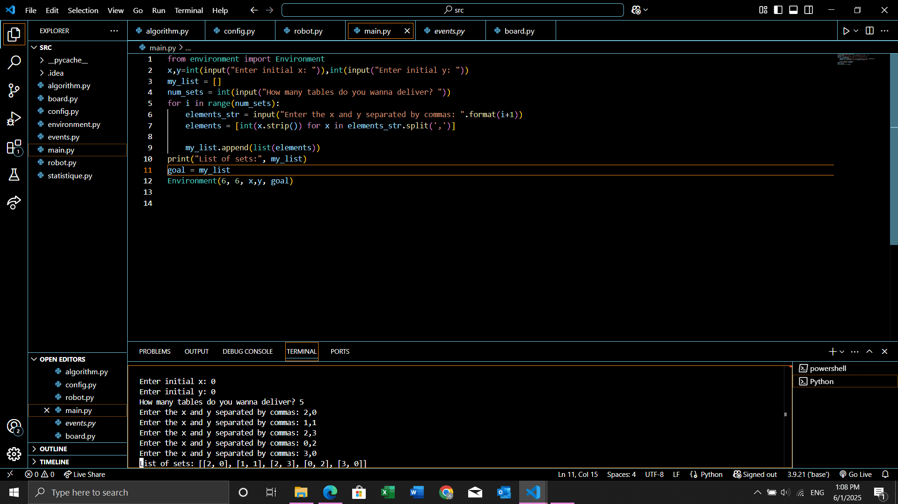

AI-powered restaurant service using optimal pathfinding algorithms
Designed an autonomous waiter robot system that reduces delivery time by 35% and energy consumption by 40% compared to random path selection.

| Component | Description |
|---|---|
| Performance | Minimize delivery time and energy consumption |
| Environment | Restaurant floor with tables, obstacles, and dynamic customers |
| Actuators | Wheels, serving tray, display screen |
| Sensors | LIDAR, RFID table tags, obstacle detection |
Academic project demonstrating strong algorithmic thinking and autonomous system design